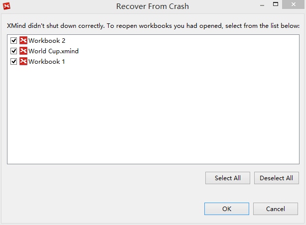

Crash Recovery
Even through your XMind session crashes for some unknown reason, your work will not be lost. Launching the XMind again, you will be prompted to open the files which were not saved when the XMind closed unexpectedly at the last time. Clicking "OK,", XMind will open these files for you.
